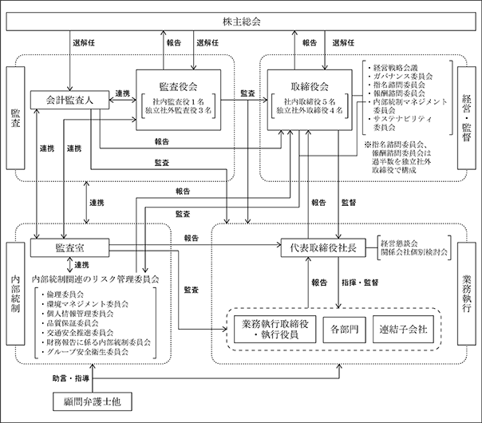

該当事項はありません。
該当事項はありません。
③ 【その他の新株予約権等の状況】
該当事項はありません。
該当事項はありません。
(注) 2015年４月15日開催の第62回定時株主総会の決議により、2015年８月１日を効力発生日として、５株を１株にする株式併合を実施し、発行済株式総数は、44,048,668株減少し、11,012,166株となっております。
(注) 自己株式255,653株は、「個人その他」に2,556単元、「単元未満株式の状況」に53株含めて記載しております。
2024年１月31日現在
（注）2024年１月31日現在における、上記大株主の所有株式数のうち信託業務の株式数については、当社として把握することができないため記載しておりません。
(注) 単元未満株式には、当社所有の自己株式53株が含まれております。
(注) 「発行済株式総数に対する所有株式数の割合」は、小数点以下第３位を四捨五入して表示しております。
【株式の種類等】
会社法第155条第７号に該当する普通株式の取得
該当事項はありません。
該当事項はありません。
(注) 当期間における取得自己株式には、2024年４月１日から有価証券報告書提出日までの単元未満株式の買取請求による株式は含めておりません。
(注) 当期間における保有自己株式数には、2024年４月１日から有価証券報告書提出日までの単元未満株式の買取請求による株式は含めておりません。
当社は、株主の皆様に対する利益還元を経営の最重要事項の一つとして認識しており、中長期的な企業価値の増大を図りながら、株主の皆様へ継続的に安定配当を行っていくことを基本方針としております。
当社は従来から安定配当を実施しており、適正と考える資本構成のもと、連結業績を基準に中期的に配当性向40％を目途に株主の皆様に還元させていただきたいと考えております。なお、配当性向40％は次期から始まる新たな中期経営計画（３ヵ年計画）中の達成を目指すこととしております。
内部留保金につきましては、財務体質の強化を念頭に株主資本の一層の充実を図りながら、今後の継続的な成長のための設備投資、システム投資、人的資本投資、Ｍ＆Ａ投資等に充当し、中期的に企業価値を高めていく所存であります。
2024年１月期は親会社株主に帰属する当期純利益が36億５百万円となったことから、今期末の剰余金の配当を１株当たり55円といたしました。既に2023年９月11日に決議の中間配当金１株当たり35円と合わせまして、年間配当金は１株当たり90円となります。
なお、当事業年度の剰余金の配当は以下のとおりであります。
当社は、中間配当と期末配当の年２回の剰余金の配当を行うことを基本方針としており、これらの剰余金の配当の決定機関は、期末配当については株主総会、中間配当については取締役会であります。
なお、「取締役会の決議によって、毎年７月31日を基準日として、中間配当を行うことができる。」旨を定款に定めております。
当社は、経営理念のもと、株主をはじめとする全てのステークホルダーに対する使命と責任を果たし、持続的な成長と中長期的な企業価値の向上を果たすため、透明性・公正性の高い経営を支えるより強固なコーポレート・ガバナンス体制の構築に取り組むことをコーポレート・ガバナンスに関する基本的な考え方といたします。
当社は、監査役会設置会社制度を採用しており、取締役９名のうち社外取締役を４名、監査役は４名のうち社外監査役を３名(うち１名は公認会計士、１名は弁護士)選任しております。
現状の体制における会社の機関の概要は次のとおりであります。
(取締役会)
取締役会は、取締役９名（うち４名は独立社外取締役）、監査役４名（うち３名は独立社外監査役）で構成されております。原則として毎月１回、取締役会を開催し、必要に応じ臨時取締役会を開催しております。法令で定められた事項や経営に関する重要事項を決定するとともに、業務執行の状況を監督しております。また、取締役会は、その構成員全員が経営理念を共有し、会社の持続的成長と中長期的な企業価値の向上のため、企業戦略の方向性を明確にし、業務執行取締役による適切なリスクテイクを支援しております。加えて、独立社外取締役、独立社外監査役の独立性に根差した公正で実効性のある取締役に対する監督機能を果たしております。
議長：代表取締役社長古賀裕之
構成員：取締役常務執行役員佐藤敏明、取締役執行役員淡田利広、取締役執行役員奥野邦治、取締役執行役員土井弘光、独立社外取締役中井康之、独立社外取締役佐藤尚文、独立社外取締役原田比呂志、独立社外取締役渡真利千恵、常勤監査役藤田修一、独立社外監査役中島亨、独立社外監査役中川一之、独立社外監査役種谷有希子
(監査役会)
監査役会は、監査役４名（うち３名は独立社外監査役）で構成されております。毎月１回開催され、各監査役は各年度に策定する監査計画に従い、監査室及び会計監査人と連携して監査役監査を行っております。また、取締役会及びその他重要な会議へ出席し、経営状況の監査を行っております。
議長：独立社外監査役（常勤）中島亨
構成員：常勤監査役藤田修一、独立社外監査役中川一之、独立社外監査役種谷有希子
(ガバナンス委員会)
ガバナンス委員会は、取締役９名（うち４名は独立社外取締役）で構成されております。当社グループの持続的な成長と企業価値の向上を実現するため、コーポレート・ガバナンスの基本方針について協議・検討するとともに、当社グループを取り巻く経営環境の変化や当社グループが抱える経営課題等について協議・検討し、取締役会に答申しております。
議長：代表取締役社長古賀裕之
構成員：取締役常務執行役員佐藤敏明、取締役執行役員淡田利広、取締役執行役員奥野邦治、取締役執行役員土井弘光、独立社外取締役中井康之、独立社外取締役佐藤尚文、独立社外取締役原田比呂志、独立社外取締役渡真利千恵
(指名諮問委員会・報酬諮問委員会)
当社では、取締役会の諮問機関として、指名委員会等設置会社の利点を取り入れた、指名諮問委員会及び報酬諮問委員会を設置しております。両委員会は、構成員である取締役３名のうち過半数が社外取締役であり、かつ社外取締役が委員長を務めております。また、代表取締役社長は原則として両委員会の委員となりません。
指名諮問委員会では、企業価値の向上、業務執行の監督機能を有効に機能させるため、取締役、監査役、執行役員及び主要子会社の代表取締役としてふさわしい候補者を選考し、取締役会及び監査役会に答申しております。報酬諮問委員会では、役員報酬の透明性・客観性を確保して、役員報酬の改定方針やその水準の検証、妥当性などを検討し取締役会へ答申しております。
指名諮問委員会 議長：独立社外取締役中井康之
構成員：取締役常務執行役員佐藤敏明、独立社外取締役佐藤尚文
報酬諮問委員会 議長：独立社外取締役原田比呂志
構成員：取締役執行役員奥野邦治、独立社外取締役渡真利千恵
(経営戦略会議)
経営戦略会議は、取締役９名（うち４名は独立社外取締役）、監査役２名（うち１名は独立社外監査役）、執行役員２名、主要子会社の社長３名で構成され、定期的に開催しております。当会議では、経営全般に関する方針、計画策定等の絞り込んだテーマについて審議しております。
議長：代表取締役社長古賀裕之
構成員：取締役常務執行役員佐藤敏明、取締役執行役員淡田利広、取締役執行役員奥野邦治、取締役執行役員土井弘光、独立社外取締役中井康之、独立社外取締役佐藤尚文、独立社外取締役原田比呂志、独立社外取締役渡真利千恵、常勤監査役藤田修一、独立社外監査役中島亨、執行役員田上玲子、執行役員原田大介、株式会社トーホーフードサービス代表取締役社長森山隆志、株式会社トーホーキャッシュアンドキャリー代表取締役社長田代光司、株式会社トーホービジネスサービス代表取締役社長蓑毛隆行
当社は、上記のような監視・監督のもとグループ全体における業務の適正を確保するため、社長を委員長とする「内部統制マネジメント委員会」を設置しております。本委員会は、業務の有効性及び効率性の確保、業務活動に関わる法令等の遵守、資産の保全、リスクマネジメント並びに財務諸表等の信頼性の確保に資することを目的として、様々な取り組みを実施しております。
上記のとおり、経営監督体制が充分に機能しているとの認識から、当社は社外取締役及び社外監査役を中心とした企業統治体制を採用しております。
(イ)業務運営の基本方針
当社グループでは、以下の経営憲章を経営のよりどころとしております。
経営憲章
この憲章は、株式会社トーホー及びグループ会社の永遠の繁栄のために定めたものである。経営にあたる者は、この憲章の趣旨を充分に理解したうえで「企業は天下の公器なり」の考え方のもとに、実行に努めなければならない。
・企業は人である。それぞれの人格を重んじ、出身閥・学閥・門閥などに囚われることなく人材を広く社内外に求め、実力主義にもとづいて、適材を適所に配置すること。
・誠実と信用を旨とし、お客様第一に心がけ、いやしくも目先の小利や投機などに走ってはならない。
・視野を広く国の内外に向け、常に時代先取りの経営を進めること。
・事を決するには、まず衆知を集め、社内外の意見を求め、わが社の発展を前提とすること。
・目的を同じくする同志として、融和と結束を常に心がけ、何事にも総力を挙げて事にあたること。
・勤勉質素を旨とし、清廉潔白に身を保ち、社会に感謝し、奉仕の精神を忘れないこと。
・公私の別を明らかにし、責任体制を明確にし、常に信賞必罰で臨むこと。
・実績を示す数字は真実の鏡である。仮にも事実を粉飾することなどがあってはならない。
・利益の配分については、まず資本の充実をはかり、株主及び従業員の優遇を心掛け、公平かつ公明に分配すること。
・在職中は勿論のこと、退職後も会社の機密など漏洩してはならない。
(ロ)取締役及び使用人の職務の執行が法令及び定款に適合することを確保するための体制
・当社グループは、「内部統制マネジメント委員会」を設置し、「グループ内部統制規程」に基づき、当社及び子会社の取締役及び使用人の職務の執行が法令及び定款に適合することを確保するための体制について統括管理を行う。
・当社グループは、「倫理委員会」を設置し、企業倫理及び法令遵守の精神を周知徹底する。
・当社グループは、「品質保証委員会」を設置し、「食品安全衛生管理規程」に基づき、食品に関する法令遵守・安全衛生体制を強化し、消費者及び取引先に提供する食品の安全確保に努める。
・当社グループは、「交通安全推進委員会」を設置し、交通規則並びに車両の適正な管理や運転技術の指導教育を行い、交通安全の推進や法令遵守の強化に努める。
・当社グループは、「個人情報管理委員会」を設置し、個人情報保護法対応及び情報セキュリティ対策等を行い、個人情報の適切な取扱いに努める。
・当社グループは、「環境マネジメント委員会」を設置し、「環境マニュアル」に基づき、継続的な地球環境保全のための活動を行う。
・当社グループは、「グループ安全衛生委員会」を設置し、グループ内で発生した労災事故の事案を把握し、その対策等を行い、労災事故撲滅に努める。
・当社グループのすべての役員及び使用人は、共通の理念である「toho group way」とコンプライアンスの基本原則である「倫理行動規範」を通じてその精神を理解し、一層公正・透明で風通しの良い企業風土の構築に努める。
・当社グループは、反社会的勢力との関係は、法令違反に繋がるものと認識し、「反社会的勢力排除規程」に基づき、不当要求等に対して毅然と対応するとともに、反社会的勢力との関係を遮断する体制の整備に努める。
・当社グループは、コンプライアンスに関する相談や不正行為等の通報のため、社内の窓口と社外の弁護士を直接の情報受領者とする外部窓口を設置し、通報者の保護を徹底した内部通報制度を運用する。
・当社は、社長直轄の監査室を設置して、監査室が、定期的に実施する内部監査を通じて、当社グループの業務実施状況の実態を把握し、すべての業務が法令、定款及び社内諸規程に準拠して適法・適正かつ合理的に行われているか、また、当社グループの制度・組織・諸規程が適法・適正であるかを公正不偏に調査・検証することにより、会社財産の保全並びに経営効率の向上に努める。
(ハ)取締役の職務の執行に係る情報の保存及び管理に関する体制
・当社は、取締役会をはじめとする重要な会議の意思決定に係る記録や、各取締役が社内諸規程に基づいて決裁した文書等、取締役の職務の執行に係る情報を適正に記録し、法令及び社内諸規程に基づき、定められた期間保存する。
(ニ)損失の危険の管理に関する規程その他の体制
・当社グループは、全社横断的な委員会組織として「内部統制マネジメント委員会」を設置し、「グループ内部統制規程」に基づき、当社グループ全体のリスクについて統括管理を行うとともに、子会社の社長を内部統制責任者として任命し、各子会社はリスクマネジメントを行う。また、有事には当社の社長を対策本部長とする緊急対策本部を設け、危機管理にあたる。
・通常のリスク管理だけでは対処できないような危機・大規模災害が発生する事態に備え、最適な管理体制を整備する。
(ホ)取締役の職務の執行が効率的に行われることを確保するための体制
・当社グループは、環境変化に対応した会社全体の将来ビジョンと目標を定めるため、中期経営計画及び単年度の経営計画を策定する。経営計画達成のため、取締役の職務権限と担当業務を明確にし、職務執行の効率化を図る。
・当社は、社長以下取締役、常勤監査役、主要子会社の社長をメンバーとする経営戦略会議を設け、定期的に開催し、経営全般に関する方針、計画策定等の絞り込んだテーマについて、充分に審議する。取締役会の決議を要する重要事項については、毎月１回開催する定例の取締役会及び臨時取締役会にて決定し、併せて取締役の職務執行状況の監督等を行う。
・当社は、子会社との各種連絡・協議を行うため、適宜、関係会社個別検討会を開催し、当社の取締役、監査役及び子会社の取締役等が必要に応じてその会議に参加することにより、経営の効率化を確保する。
(ヘ)当社及び子会社から成る企業集団における業務の適正を確保するための体制
・当社は、子会社の業務の適正を確保するため、グループ戦略部を設置し、適切な経営管理を行う。
・当社は、「関係会社管理規程」に基づき、子会社に対し、重要事項の承認について必要な手続き及び報告事項について報告を求める。
(ト)監査役による監査が効率的に行われるための体制
・監査役がその職務を補助すべき使用人を置くことを求めた場合における当該使用人に関する事項
当社は、監査役の職務を補助する使用人を監査室に置く。
・前項の使用人の取締役からの独立性に関する事項
当該使用人の任命、解任、評価、人事異動については、監査役会の同意を得た上で決定することとし、取締役からの独立性を確保する。
・前２項の使用人に対する指示の実効性の確保に関する事項
当該使用人に対する指揮命令は監査役が行う。
・取締役及び使用人による監査役への報告に関する体制
(ⅰ)当社グループの取締役及び使用人は、法令に従い、会社に著しい損害を及ぼすおそれのある事実があることを発見したとき又は不正事故等が発生したときは直ちに当社監査役に報告する。
(ⅱ)当社において、常勤監査役は、取締役会の他、重要な意思決定の過程及び業務の執行状況を把握するため、経営戦略会議等の重要な会議に出席するとともに、主要な稟議書その他業務執行に関する重要な文書を閲覧することとする。
(ⅲ)上記にかかわらず、当社監査役は、必要に応じていつでも、当社グループの取締役及び使用人に対して報告を求め、重要と思われる会議に出席し、また、書類の提示を求めることができるものとする。
(チ)監査役へ報告をした者が当該報告をしたことを理由として不利な取扱いを受けないことを確保するための体制
・当社は、当社監査役へ報告を行った当社グループの取締役及び使用人に対し、当該報告を行ったことを理由として不利な取扱いを行うことを禁止し、その旨を当社グループの取締役及び使用人に周知徹底する。
(リ)監査役の職務の執行について生ずる費用の前払い又は償還の手続その他の当該職務の執行について生ずる費用又は債務の処理に係る方針に関する事項
・当社監査役がその職務の執行について、当社に対し費用の前払い等の請求をしたときは、当該請求に係る費用又は債務が当該監査役の職務の執行に必要でないと認められた場合を除き、速やかに当該費用等の処理を行う。
(ヌ)その他監査役の監査が実効的に行われることを確保するための体制
(ⅰ)当社の監査室は、内部監査の計画及び結果の報告を、当社監査役に対して定期的及び必要に応じて臨時に行って相互の連携を図ることとする。
(ⅱ)当社監査役は、会計監査人の会計監査に積極的に立会うことにより連携を図ることとする。
(ル)財務報告の信頼性を確保するための体制
・当社グループは、「財務報告に係る内部統制委員会」を設置し、財務報告に関する内部統制の整備・運用を行い、財務報告の信頼性を確保する。
なお、当社のコーポレート・ガバナンスの模式図は、次のとおりであります。

③ 責任限定契約の内容の概要
当社と各社外取締役及び各社外監査役は、会社法第427条第１項の規定に基づき、同法第423条第１項の賠償責任を限定する契約を締結しております。当該契約に基づく損害賠償責任の限度額は、法令が規定する額としております。なお、当該責任限定が認められるのは、当該社外取締役又は社外監査役が責任の原因となった職務について善意かつ重大な過失がないときに限られます。
④ 補償契約の内容の概要
当社は、当社役員との間で、補償契約は締結しておりません。
⑤ 役員等賠償責任保険契約の内容の概要
当社は、会社法第430条の３第1項に規定する役員等賠償責任保険契約を保険会社との間で締結し、被保険者が負担することになる、役員等がその職務の執行に関し責任を負うこと又は当該責任の追及に係る請求を受けることによって生ずる損害を当該保険契約により填補することとしております。
当該役員等賠償責任保険契約の被保険者は当社取締役、当社監査役、当社執行役員および当社グループ会社役員であり、すべての被保険者について、その保険料を全額当社が負担しております。但し、法令違反の行為であることを認識して行った行為に起因して生じた損害は填補されないなど、一定の免責事由があります。
当社の取締役は10名以内とする旨を定款に定めております。
当社は、取締役の選任決議について、議決権を行使することができる株主の議決権の３分の１以上を有する株主が出席し、その議決権の過半数をもって行う旨及び累積投票によらない旨を定款に定めております。
当社は、会社法第165条第２項の規定により、取締役会の決議によって自己の株式を取得することができる旨を定款に定めております。これは、機動的な資本政策を遂行できるようにするためであります。
当社は、株主への機動的な利益還元を行うため、会社法第454条第５項に定める剰余金の配当(中間配当)を取締役会決議により可能とする旨を定款で定めております。
当社は、会社法第309条第２項の規定に定める株主総会の特別決議要件について、議決権を行使することができる株主の議決権の３分の１以上を有する株主が出席し、その議決権の３分の２以上をもって行う旨を定款に定めております。これは、株主総会における特別決議の定足数を緩和することにより、株主総会の円滑な運営を行うことを目的とするものであります。
⑪ 当事業年度における提出会社の取締役会、指名委員会等設置会社における指名委員会及び報酬委員会並びに企業統治に関して提出会社が任意に設置する委員会その他これに類するものの活動状況
(イ)当社取締役数は９名で、業務執行取締役５名、非業務執行取締役である社外取締役４名で構成されております。当事業年度において当社は取締役会を合計18回開催しており、個々の取締役の出席状況については以下のとおりです。
(注)土井弘光氏、渡真利千恵氏は、2023年４月25日開催の第70回定時株主総会において選任されたため、就任後に開催された取締役会のみを対象としております。
(ロ)取締役会の具体的な検討内容
具体的な決議事項、報告事項は以下のとおりです。
(イ)当社が設置している指名諮問委員会および報酬諮問委員会は、各々構成員である取締役３名のうち独立社外取締役を過半数の２名とし、各委員長も独立社外取締役としております。
当事業年度においては、当社は指名諮問委員会を６回、報酬諮問委員会を７回開催しておりますが個々の委員の出席状況については以下のとおりです。
指名諮問委員会
報酬諮問委員会
(ロ)指名諮問委員会・報酬諮問委員会の具体的な検討内容
具体的な審議事項は以下のとおりです。
① 役員一覧
男性
(注) １．取締役の任期は、2023年１月期に係る定時株主総会終結の時から2025年１月期に係る定時株主総会終結の時までであります。
２．常勤監査役藤田修一氏の任期は、2024年１月期に係る定時株主総会終結の時から2028年１月期に係る定時株主総会終結の時までであります。
３．常勤監査役中島亨氏の任期は、2021年１月期に係る定時株主総会終結の時から2025年１月期に係る定時株主総会終結の時までであります。
４．監査役中川一之及び種谷有希子の各氏の任期は、2023年１月期に係る定時株主総会終結の時から2027年１月期に係る定時株主総会終結の時までであります。
５．取締役中井康之、佐藤尚文、原田比呂志及び渡真利千恵の各氏は、社外取締役であります。
６．常勤監査役中島亨並びに監査役中川一之及び種谷有希子の各氏は、社外監査役であります。
イ．社外取締役及び社外監査役の員数
当社社外取締役は４名、社外監査役は３名であります。
ロ．社外取締役及び社外監査役との関係
当社株式の保有状況については、「(２)役員の状況」の「所有株式数」欄に記載のとおりであります。それ以外に当社との間において、人的関係、資本的関係又は取引関係その他の利害関係はありません。
ハ．社外取締役及び社外監査役を選任するための独立性に関する基準
当社指名諮問委員会では、下記のとおり社外取締役及び社外監査役の独立性判断基準を定めており、次の事項のいずれにも該当しない社外役員を「独立社外取締役」及び「独立社外監査役」としております。また、就任後も在任期間が長期化することで独立性が懸念されることのないよう、連続就任年数を原則８年までとしております。なお、当社の取締役会は社内取締役及び社内監査役と独立社外取締役及び独立社外監査役で構成されております。
(イ)グループ会社の役員・従業員
・本人が当社グループ会社の出身者
・過去５年間において、二親等内の親族がグループ会社の取締役・監査役・理事・執行役員・経営幹部であった者
(ロ)大口取引先関係者
・直近期末の連結売上高の２％以上の取引金額がある取引先グループの取締役・監査役・執行役・執行役員・従業員。又は最近３年間においてその役職にあった者
・直近期末の連結総資産の１％以上の借り入れがある金融機関グループの取締役・監査役・執行役・執行役員・従業員。又は最近３年間においてその役職にあった者
(ハ)専門的サービス提供者(弁護士、公認会計士、税理士、弁理士、司法書士、コンサルタントなど)
・グループ会社から過去２年間に年間５百万円以上の報酬を受領している者
(ニ)当社の法定監査を行う監査法人の所属員又は最近３年間においてグループ会社の監査業務を担当した者
(ホ)大株主ほか
・当社の議決権所有割合(法人の場合は当該法人が属する企業グループ合計の議決権所有割合)５％以上の大株主(法人の場合はその法人の取締役・監査役・執行役・執行役員・従業員)
・当社と相互に取締役・監査役・執行役員を派遣している法人の取締役・監査役・執行役・執行役員・従業員。又は最近３年間においてその役職にあった者
・グループ会社と競合関係にある法人の取締役・監査役・執行役・執行役員・従業員。又は競合関係にある法人の株式を３％以上保有している者(法人の場合は、その法人の取締役・監査役・執行役・執行役員・従業員)
・その他の重要な利害関係がグループ会社との間にある者(法人の場合は、その法人の取締役・監査役・執行役・執行役員・従業員)
ニ．社外取締役及び社外監査役の選任状況に関する考え方
中井康之氏は、金融機関および事業会社での勤務経験とともに、監査役として会社経営にも関与し、豊富な経験と高い見識を有しており、社外取締役としての職務を独立的な立場で適切に遂行できると判断し、社外取締役として選任しております。佐藤尚文氏は、金融機関および事業会社での経営の経験と高い見識を有しており、社外取締役としての職務を独立的な立場で適切に遂行できると判断し、社外取締役として選任しております。原田比呂志氏は、行政分野での長年の勤務と事業会社での経営経験に基づく高い見識を有しており、社外取締役としての職務を独立的な立場で適切に遂行できると判断し、社外取締役として選任しております。渡真利千恵氏は、事業会社で要職を歴任し、管理面や商品開発、女性活躍推進などで豊富な経験と高い見識を有しており、社外取締役としての職務を独立的な立場で適切に遂行できると判断し、社外取締役として選任しております。
中島亨氏は、長年にわたり金融機関で要職を歴任し、事業会社における経営者としての豊富な経験と高い見識を有しており、公正中立な立場で職務を適切に遂行できると判断し、社外監査役として選任しております。中川一之氏は、公認会計士として監査法人の代表社員を務めるとともに事業会社において監査役に就任するなど、財務・会計に関する高い知識を有しており、公正中立な立場で職務を適切に遂行できると判断し、社外監査役として選任しております。種谷有希子氏は、弁護士として専門的な知識を有するとともに、企業法務のみならず男女共同参画推進など豊富な経験を有しており、公正中立な立場で職務を適切に遂行できると判断し、社外監査役として選任しております。
当社は社外取締役４氏及び社外監査役３氏を一般株主と利益相反取引が生じるおそれがない独立役員として、東京証券取引所に届出ております。
③ 社外取締役又は社外監査役による監督又は監査と内部監査、監査役監査及び会計監査との相互連携並びに内部統制部門との関係
社外取締役及び社外監査役は、取締役会及び監査役会のほか、随時に常勤監査役、監査室及び会計監査人との間で会合をもつなど、情報の共有及び意見交換を行っております。また、内部統制部門から定期的に報告を受け、社外取締役及び社外監査役は適宜質問及び意見表明を行っております。
(3) 【監査の状況】
当社は監査役会設置会社であり、常勤監査役２名及び非常勤監査役２名の４名で構成され、常勤監査役のうち１名は社内事情に通じた社内出身者で、常勤監査役のうち１名と非常勤監査役の２名は独立社外監査役であり、財務・会計・法務に関する十分な知見を有しております。
(監査役の主な活動と役割分担)
常勤監査役、非常勤監査役とも、監査役会の決議による年度計画に基づき会計監査及び取締役等の業務執行について適法性の監査を行いますが、具体的には、会計監査におきましては会計監査人から職務の実施状況につき報告を受けると共に必要に応じて説明を求める他、会計監査人の棚卸監査や内部統制の監査に立会うなどして監査報告書及び計算関係書類並びに事業報告・附属明細書等の監査の相当性の監査を行っております。また、取締役会及び監査役会に出席し意見陳述を行い、代表取締役との面談、社外取締役との連絡会をそれぞれ年２回実施し、ガバナンスの維持及び向上に努めております。さらに監査室と定期的に会合を持ち、相互に連携を図っております。
役割分担としましては、常勤監査役は、日常的に、内部統制マネジメント委員会やサステナビリティ委員会等重要な会議への出席や子会社からの事業報告の確認などによりグループ内の情報収集に努め、内部統制システムの構築・運用状況を監視するとともに、業務執行役員と年に数回の面談を実施し、知りえた情報を監査役会で非常勤監査役と共有を図っております。
非常勤監査役は、取締役会等重要会議におきまして、公認会計士及び弁護士としての観点から、専門知識・経験等に基づいた意見陳述及び助言を行っております。
重要な会議への出席状況
(注) 全回数が異なるのは、就任時期の違いによるものです。
監査役会と会計監査人との連携状況
(監査役会の具体的な検討内容)
当事業年度の具体的な検討事項は以下の通りであります。検討は監査役会において実施しております。
（決議事項）
監査役監査計画、監査実施状況、各監査役の監査報告、監査役会の監査報告書作成、会計監査人の再任、監査契約書締結に関する監査報酬同意、監査役会議長選定、監査役報酬の個人別配分、監査役報酬規程制定
（協議事項）
取締役会議案、定時株主総招集通知の内容(剰余金の配当の適法性検討)、財務報告に係る内部統制報告書承認
（報告事項）
経営戦略会議議案、会計監査人による監査報告、内部監査報告、国内・海外子会社株主総会、サステナビリティ委員会、その他事項
② 内部監査の状況
内部監査につきましては、代表取締役直轄の監査室（８名 2024年１月31日現在）を設置し、当社及びグループ各社の企業の法令及び社内規程の遵守状況、内部統制システムや事業活動全般の妥当性・効率性等について、毎期計画的に実施しております。
監査室が、「内部監査規程」に基づき業務監査や金融商品取引法に基づく財務報告に係る内部統制の評価及び報告を実施し、代表取締役及びリスク管理担当取締役並びに監査役会に実施状況を毎月定期的に報告しております。また、監査室、監査役及び会計監査人は定期的な情報の共有及び意見交換に加え、必要に応じて随時打合せや意見交換を実施することで連携を図り、内部監査の実効性を高めております。
協立神明監査法人
24年間
協立神明監査法人
代表社員・業務執行社員 朝田 潔
業務執行社員 水山 雅稔
補助者16名（公認会計士13名、その他３名）
監査役会は、監査法人としての品質管理体制、監査の実施体制、独立性及び専門性の保持、当社が展開する事業分野への理解度等を総合的に勘案し、監査法人を選定しております。
また、会計監査人が会社法第340条第１項各号に定める項目に該当すると認められる場合には、監査役全員の同意に基づき監査役会が会計監査人を解任いたします。この場合、監査役会が選定した監査役は、解任後最初に招集される株主総会におきまして、会計監査人を解任した旨と解任の理由を報告いたします。
そのほか、会計監査人が職務を適正に遂行することが困難と認められる場合、または、より適切な監査を行うために会計監査人の変更が妥当と判断される場合には、監査役会は会計監査人の解任または不再任に関する株主総会の議案の内容を決定いたします。
監査役及び監査役会は、監査法人の品質管理体制、監査の実施体制、監査役との連携状況、経営陣、経理財務部門などとのコミュニケーション等の観点から監査法人の評価を行い、当社の会計監査人として適切と考えております。
(ア)監査公認会計士等に対する報酬の内容
※ 記載金額は、百万円未満を四捨五入して表示しております。
(イ)監査公認会計士等と同一のネットワークに対する報酬（(ア)を除く）
特記すべき事項はありません。
(ウ)その他重要な報酬の内容
特記すべき事項はありません。
(エ)監査公認会計士等の提出会社に対する非監査業務の内容
該当事項はありません。
(オ)監査報酬の決定方針
当社の監査公認会計士等に対する報酬につきましては、監査公認会計士等の監査予定日数、会社規模等を総合的に勘案の上、決定しております。
(カ)監査役会が会計監査人の報酬等に同意した理由
監査役会は、監査公認会計士等の監査日数及び監査報酬の推移並びに過年度の監査計画と実績の状況を確認し、当事業年度の監査計画及び報酬見積りの算出根拠などが適切であるかどうかについて必要な検証を行った結果、会計監査人の報酬等について相当と判断し、同意しております。
(4) 【役員の報酬等】
当社は、取締役の報酬等の額又はその算定方法の決定に関する基本方針を次のとおり定めております。
ａ．トーホーグループの長期継続的な成長と企業価値の向上につながること
ｂ．毎年の経営目標達成のインセンティブとなること
ｃ．経営環境や業界水準など客観性のある水準であること
ｄ．透明性のあるプロセスで決定されること
当社の取締役（社外取締役を除く）の報酬は、業績連動報酬（業績連動金銭報酬と株式報酬）と役位別固定報酬で構成され、その割合は概ね３：７となっております。
業績連動報酬は、単年度の業績と個人評価によって決定される業績連動金銭報酬ならびに中長期的な業績向上と企業価値増大を目的とする株式報酬で構成されております。
単年度の業績反映分の業績連動金銭報酬は、営業利益の実績の業績予想値に対する達成率と前年からの伸びを基にして決定され、個人別に業績への貢献度に応じて±30％で増減し、月額報酬の一部として支払われます。
取締役の個人別貢献度の評価は報酬諮問委員会が委員全員の同意のもと行い、報酬諮問委員会の評価結果（但し、代表取締役自身を除く）に代表取締役の評価を反映して最終決定されます。取締役会は報酬諮問委員会による最終確認を経た評価結果に基づき、あらかじめ定められた算式で算出した結果をもって個人別報酬額を決定しており、決定の全部又は一部を取締役その他の第三者に委任しておりません。
業績連動報酬のうち株式報酬は、役員向け株式給付信託の仕組みを採用し、取締役会で定めた「株式給付規程」に基づき、役位および業績目標の達成度に応じて算出したポイントを付与し、ポイント数に応じて当社株式を給付します。業績目標の評価指標は、連結営業利益の目標値に対する達成率と、直接的な株主の利益を共有するための株価の前事業年度比率を用いております。
株式報酬に関して、2024年４月23日開催の第71回定時株主総会において、当社の取締役（社外取締役及び国内非居住者を除きます。）及び委任型執行役員（国内非居住を除きます。）（以下、併せて「取締役等」といいます。）を対象とした業績連動型株式報酬制度（以下、「本制度」といいます。）の導入が決議されております。本制度は、取締役等の報酬と当社の業績及び株式価値との連動性を明確にし、取締役等が株価上昇によるメリットを享受するのみならず、株価下落リスクまでも株主の皆様と共有することで、中長期的な業績向上と企業価値増大への貢献意欲を高めることを目的としております。
具体的には、役員向け株式給付信託（以下、「本信託」といいます。）の仕組みを活用し、取締役等に対して、各事業年度において、当社が定める株式給付規程に基づき、役位及び業績目標の達成度に応じて算出したポイント（基礎ポイント及び業績連動ポイント）が付与されます。原則として取締役等が退任等し、株式給付規程に定める受益者要件を満たした場合、本信託を通じて、取締役等に付与するポイント数の70％に相当する数の当社株式を取締役等に給付するとともに、残りのポイント数に相当する数の当社株式については、納税資金確保の観点から、当社株式の給付に代えて、当社株式の時価相当額の金銭を給付します。
１．本制度の概要
２．対象者へ付与するポイント数の上限
各事業年度に対象者へ付与するポイント数の役位毎の上限は次のとおりです。
※法人税法第34条第１項第３号イ（1）に規定する「確定した数」は、以下の「上限ポイント数」を、１ポイントあたり当社普通株式１株に換算することによって算出される株式数です。
３．ポイント算定式
各対象者の付与ポイント数は、以下の算定式によって個別に決定します。
＜各事業年度に付与する年間付与ポイント＞
年間付与ポイント＝
基礎ポイント（※１）＋業績連動ポイント（※２）×（業績連動係数①＋業績連動係数②（※３））
（※１）基礎ポイント
基準日における対象者の役位（対象者が役位を兼務する場合にあっては、株式会社トーホーにおける役位）に応じて次のとおり決定します。
（※２）業績連動ポイント
基準日における対象者の役位（対象者が役位を兼務する場合にあっては、株式会社トーホーにおける役位）に応じて次のとおり決定します。
（※３）業績連動係数
業績連動係数①は、各事業年度における連結営業利益の目標値に対する達成率に応じて次のとおりに設定します。
当該指標を選択した理由は、企業の成長性を表し、「本業の稼ぐ力」を示す指標であるためです。
2024年度の当該指標の目標値は、7,300百万円とし、実績値が当該値である場合を業績達成率100％とし、実績値と当該値の比率に応じて、上記の表に従い算定します。本制度は2024年度を初年度として導入していることから、当事業年度にかかる実績はありません。
業績連動係数②は、対象株式終値の前事業年度比（以下計算式にて算出）に応じて、次のとおりに設定します。
＜比率の計算式＞
対象事業年度の東京証券取引所における対象株式の期中終値平均値（１円未満切り捨て）
÷前事業年度の東京証券取引所における対象株式の期中終値平均値（１円未満切り捨て）
４．給付する当社株式及び金銭
３．のポイント算定式に基づき付与されたポイントの対象者毎の累計数（以下、「累計ポイント」という。）に応じて以下の通り、当社株式及び金銭を給付します。なお、付与されたポイントの累計数は、１ポイントあたり当社普通株式１株に換算します。ただし、会社の株式について株式分割、株式無償割当て又は株式併合等が行われた場合には、その比率等に応じて、換算比率について合理的な調整を行うものとします。
(1) 対象者が会社の役員を退任し、かつ、役員又は使用人その他の従業員のいずれの地位も有しなくなったとき、本信託が終了したとき
（株式）
株式にて給付されるべき対象株式数＝累計ポイント×70％（単元未満の株式は切り捨て）
（金銭）
金銭にて給付されるべき対象株式数（※）×株価（注）
※金銭にて給付されるべき対象株式数＝累計ポイント－株式にて給付されるべき対象株式数
(2) 対象者が在任中に死亡したとき（遺族給付）、海外赴任等により国内非居住者となることが決定したとき
累計ポイントの全てを金銭にて給付する。
（金銭）
金銭にて給付されるべき対象株式数（※）×株価（注）
※金銭にて給付されるべき対象株式数＝累計ポイント
(3) 対象者が自己都合退任したとき
累計ポイントの全てを株式にて給付する。
（注）株価は、権利取得日（遺族給付を行う場合には遺族給付権取得日）の金融商品取引所における対象株式の終値又は気配値とし、当該日に終値又は気配値が公表されていない場合にあっては、終値又は気配値を取得できる直近の日まで遡って算定するものとする。
固定報酬は、役位に応じて設定されており毎月定額が支払われます。
社外取締役に対しては、独立かつ客観的な立場から当社の経営を監督するという役割からあらかじめ決められた固定報酬のみが支払われます。
取締役報酬の改定方針やその水準の検証、また株式報酬の算定方法の妥当性については、構成員の過半数を独立社外取締役とし、かつ独立社外取締役が委員長を務める報酬諮問委員会（代表取締役社長は原則として委員にならない）が客観的かつ公正な観点から検討し、取締役会に答申しております。なお、報酬諮問委員会は今期７回開催いたしました。
なお、監査役報酬の個人別配分については、監査役の協議によって決定しております。
② 役員報酬等に関する総会決議
取締役の報酬限度額は、2017年４月18日開催の第64回定時株主総会において年額300百万円以内(うち、社外取締役分年額50百万円以内。ただし、使用人分給与は含まない。)と決議いただいております。決議当時の取締役の員数は９名（うち、社外取締役の員数は４名）であります。
監査役の報酬限度額は、2017年４月18日開催の第64回定時株主総会において月額５百万円以内と決議いただいております。決議当時の監査役の員数は４名であります。
③ 役員区分ごとの報酬等の総額、報酬等の種類別の総額及び対象となる役員の員数
(注) 退職慰労金は、既に廃止いたしております。
連結報酬等の総額が１億円以上の役員がいないため記載を省略しております。
(5) 【株式の保有状況】
当社グループは、保有目的が純投資目的である投資株式と純投資目的以外の目的である投資株式の区分について、株式の価値変動又は株式に係る配当によって利益を受けることを目的とする株式を純投資目的である投資株式、取引関係の拡大や業務連携の強化等を目的とする株式を純投資目的以外の目的である投資株式に区分しております。
当社グループは、取引関係・協業関係の維持強化につながり、結果として当社グループの持続的成長及び長期的な企業価値の向上に資すると判断した場合、または業界動向を知るために限り株式を保有する考えであります。一方、当社グループは保有の意義が希薄と考えられる株式については、できる限り速やかに処分・縮減していく考えであります。そのため、毎期取締役会において個別銘柄ごとに保有目的と現状との適合性、保有に伴うリスクや便益と資本コストとのバランスを精査し、保有の適否を検証しております。
②
連結子会社のうち、投資株式の貸借対照表計上額(投資株式計上額)が最も大きい会社(最大保有会社)である(株)トーホーフードサービスについては以下のとおりであります。
ａ．保有目的が純投資目的以外の目的である投資株式
イ．保有方針及び保有の合理性を検証する方法並びに個別銘柄の保有の適否に関する取締役会等における検証の内容
取引先との関係強化等により、当社グループの企業価値向上に必要と判断した場合は株式を保有しております。保有の合理性については取引状況に加え、資本コストを踏まえた便益、保有に伴うリスク等を総合的に検証の上、当社の取締役会で審議しております。審議の結果、保有の合理性が乏しいと判断した場合には売却による縮減を進めております。
ロ．銘柄数及び貸借対照表計上額
ハ．特定投資株式及びみなし保有株式の銘柄ごとの株式数、貸借対照表計上額等に関する情報
特定投資株式
（注）１．定量的な保有効果については取引状況に加え、資本コストを踏まえた便益、保有に伴うリスク等を総合的に検証の上、当社の取締役会で保有意義の確認を行っております。検証結果については取引関係に与える影響等を考慮して開示を控えさせて頂きます。
提出会社については、以下のとおりであります。
イ．保有方針及び保有の合理性を検証する方法並びに個別銘柄の保有の適否に関する取締役会等における検証の内容
取引先との関係強化等により、当社グループの企業価値向上に必要と判断した場合は株式を保有しております。保有の合理性については取引状況に加え、資本コストを踏まえた便益、保有に伴うリスク等を総合的に検証の上、取締役会で審議しております。審議の結果、保有の合理性が乏しいと判断した場合には縮減を進めております。
ロ．銘柄数及び貸借対照表計上額
（当事業年度において株式数が減少した銘柄）
ハ．特定投資株式及びみなし保有株式の銘柄ごとの株式数、貸借対照表計上額等に関する情報
特定投資株式
（注）１．定量的な保有効果については取引状況に加え、資本コストを踏まえた便益、保有に伴うリスク等を総合的に検証の上、取締役会で保有意義の確認を行っております。検証結果については取引関係に与える影響等を考慮して開示を控えさせて頂きます。
２．㈱久世は当社株式を保有しておりませんが、同社子会社であるキスコフーズ㈱は当社株式を保有しております。
３．㈱ふくおかフィナンシャルグループは当社株式を保有しておりませんが、同社子会社である㈱福岡銀行は当社株式を保有しております。
４．㈱三井住友フィナンシャルグループは当社株式を保有しておりませんが、同社子会社である㈱三井住友銀行は当社株式を保有しております。
５．㈱西日本フィナンシャルホールディングスは当社株式を保有しておりませんが、同社子会社である㈱西日本シティ銀行は当社株式を保有しております。
６．第一生命ホールディングス㈱は当社株式を保有しておりませんが、同社子会社である第一生命保険㈱は当社株式を保有しております。
７．㈱りそなホールディングスは当社株式を保有しておりませんが、同社子会社である㈱りそな銀行及び㈱みなと銀行は当社株式を保有しております。
８．㈱ちゅうぎんフィナンシャルグループは当社株式を保有しておりませんが、同社子会社である㈱中国銀行は当社株式を保有しております。
９．㈱ニチレイは当社株式を保有しておりませんが、同社子会社である㈱ニチレイフーズと㈱中冷は当社株式を保有しております。